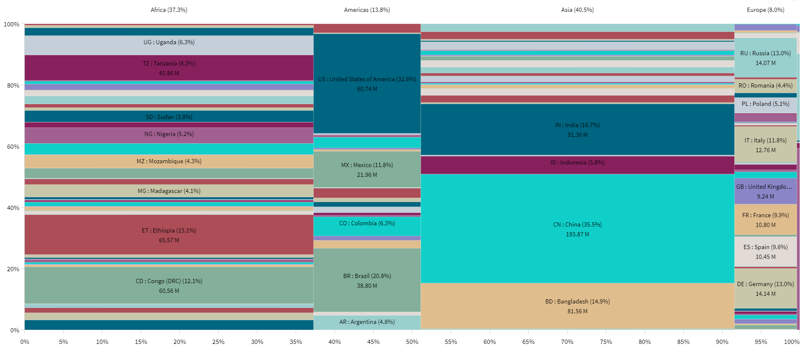

<!--
Mestrado em Engenharia Informática e Tecnologia Web
Visualização de Informação
Projeto Final
Grupo: Claudia Pires (1303334) / Valter Bastos (2302612)
Ficheiro HTML
-->
<div class="content" style="text-align:center;">			
	<!----------------------------------------------------------------->
	<div class="chart-area">
		<h1>World Overview</h1>
		<div class="grid-container">
			<!--Div à esq. cima -->
			<div class="grid-child purple">
				<p style="text-align:center; font-size:22px;font-weight:bold;">Share of % Population under Poverty line<br>
				<b>&#8681;</b>
				</p>
				<div id="WorldMapChart_div" class="WorldMapChart_div">
					<script>
						LoadData("./data/Load_WorldChart_World.csv", "WorldMapChart", "#WorldMapChart_div");
					</script>
				</div>
				
				<div class="chart_desc">
					<p style="font-weight: bold;">Chart description:</p>
					<u>Choropleth World map</u> showing the prevalence of poverty (share of population) in countries and regions.
					<br>
					Clicking the play button will show the evolution along the years from 2000 until 2021.<br><br>
					<p>
				</div>
				
			</div>
			<!--Div à dir. cima -->
			<div class="grid-child purple">
				<p style="text-align:center; font-size:22px;font-weight:bold;">Trend of % Population under Poverty line<br>
				<b>&#8681;</b>
				</p>
				<div id="LineChart_div" class="LineChart_div">
					<script>
						LoadData("./data/Load_LineChart_World.csv", "LineChart", "#LineChart_div");
					</script>
				</div>
				
				<div class="chart_desc">
					<p style="font-weight: bold;">Chart description:</p>
					<u>Line chart</u> showing the Trend (growth or decline) of each continent's Average % Population living under Poverty Line.<br>
					Hovering with the mouse the lines/dots shows the value in each year.<br>
					<p>
				</div>
			</div>			
		</div>
		<br><br>
		<div class="grid-child purple">
			<p style="text-align:center; font-size:22px;font-weight:bold;">Contribution of each Country to the Total Nr. of people living under the Proverty Line<br>
			<b>&#8681;</b>
			<p style="font-weight:bold; font-size:18px;">Year: 2021</p>
			</p>
			<br>
		</div>
		
		<div class="chart_desc">
			<p style="font-weight: bold;">Chart description:</p>
			<u>Mekko chart</u> showing the contribution of each country and continent to the total Head Count living under the poverty line.<br>
			Cross sectional data for Year 2021.<br><br>
			<p>
		</div>	
	</div>
</div>